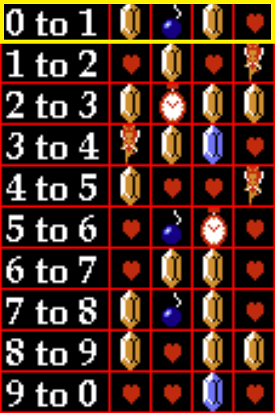

Count
A
B
C
D
0 to 1

Tracker not in focus! Keyboard disabled!
Kills Until...
Bombs:
Clock:
Fairy:
Fiver:
Drop Chances
A: 31% ( 80/256)
B: 41% (104/256)
C: 59% (152/256)
D: 41% (104/256)
Drop Tracker v1.8 by
TheDoctorBlue
Keyboard (browser window must be in focus for these to work)
1-9 = Advance Counter 1-9 Steps
= Regress Counter 1 Step (Default:
ArrowLeft
)
= Advance Counter 1 Step (Default:
ArrowRight
)
= Highlight latest log entry (Default:
0
)
Previous highlighting removed
If latest log entry was already highlighted, it stays un-highlighted
= Clear Log (Default:
F4
)
= Reset Counter to 0 (Default:
F7
)
= Toggle Log (Default:
F9
)
Tracker disabled when editing keys. Click magenta text when done editing.
Tips
Last key (can copy/paste into above bindings):
N/A
Try not to use hotkeys that take away focus or close the browser window (e.g. F6, F11).
Set "Reset Counter" to the same key that resets so that when you reset, the global tracker also resets!
Best viewed half-screen (vertical), which hides all the informational text on the right and shows only relevant info.
Here's the full drop table for reference
(opens in new tab).
Feature Request? Bug Report?
Fire away!